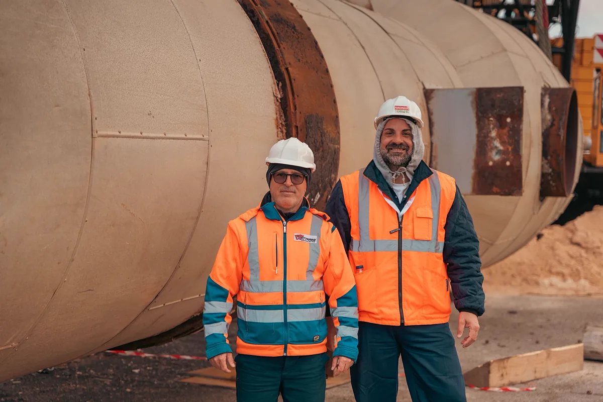
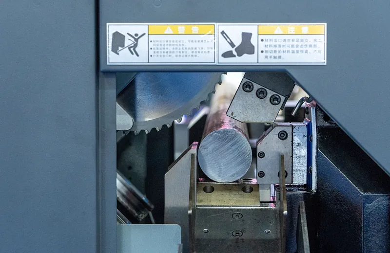
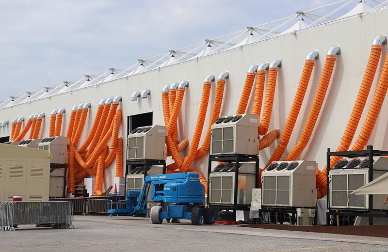
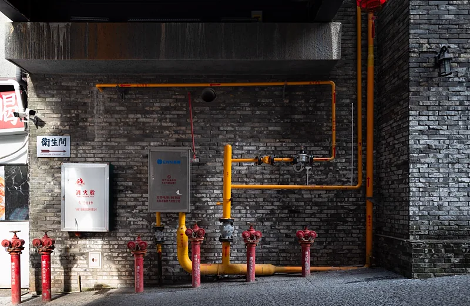
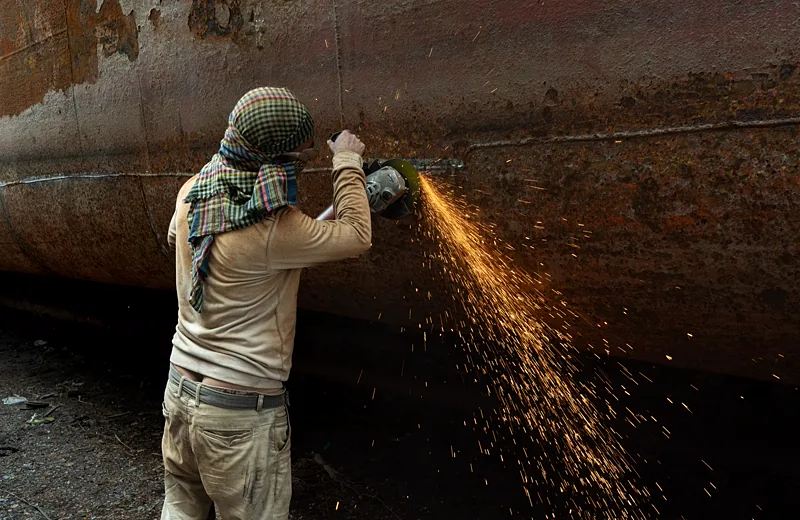

NR-13
NR-13
Inspeção de caldeiras e vasos de pressão
Inspeção inicial, periódica e extraordinária, teste hidrostático, prontuário, registro de segurança e projeto de alteração ou reparo.
Ver serviço NR-13Inspeção de caldeiras e vasos de pressão, adequação de máquinas, plano de manutenção de climatização e sistemas de combate a incêndio. Laudo com ART, prontuário completo e equipamento liberado para operar dentro da norma — em toda a Grande Vitória.
Muita empresa descobre que o prontuário está incompleto no dia da fiscalização, do sinistro ou da renovação do seguro. Nosso trabalho é o contrário disso: levantamos a condição real do equipamento, apontamos o que impede a conformidade e entregamos o documento que sustenta a decisão de continuar operando.
Atuamos em indústria, construção, hospital, condomínio, rede de alimentação e prestador de serviço em toda a Grande Vitória — com deslocamento programado para os polos de Anchieta, Aracruz e Linhares.

Seis frentes que cobrem o ciclo completo: identificar o equipamento, avaliar a condição, adequar o que falta e manter a documentação viva.
NR-13
Inspeção inicial, periódica e extraordinária, teste hidrostático, prontuário, registro de segurança e projeto de alteração ou reparo.
Ver serviço NR-13
NR-12Apreciação de riscos, projeto de proteções, intertravamento, categoria de segurança, laudo técnico e acompanhamento da adequação.
Ver serviço NR-12
PMOCElaboração e execução do Plano de Manutenção, Operação e Controle, com responsável técnico, cronograma e análise da qualidade do ar interior.
Ver serviço PMOCUltrassom convencional e de medição de espessura, líquido penetrante, partículas magnéticas e inspeção visual dimensional com relatório.
Ver ensaios (END)
IncêndioProjeto, manutenção e inspeção de hidrantes, extintores, sprinklers e mangueiras, com teste hidrostático e documentação para o Corpo de Bombeiros.
Ver combate a incêndio
ReparosProjeto de alteração e reparo conforme NR-13, dimensionamento de costado e tampo, especificação de solda e acompanhamento da execução.
Falar sobre reparoSe algum desses problemas é o seu, existe caminho técnico e prazo definido para resolver.
Equipamento comprado usado, sem documentação de origem e sem placa legível.
Recompor prontuário →Auditor pediu registro de segurança e relatório de inspeção atualizado.
Regularizar NR-13 →Prensa, serra ou injetora com zona de risco exposta e sem parada de emergência.
Adequar à NR-12 →Órgão público, hospital ou shopping cobrando plano de climatização com ART.
Montar o PMOC →Corrosão em tubulação, tanque ou costado e dúvida se ainda pode operar.
Medir por ultrassom →Sistema de hidrantes ou mangueiras sem teste hidrostático e sem laudo.
Resolver incêndio →PSV sem calibração registrada e sem relatório de bancada dentro do prazo.
Calibrar e documentar →Equipamento nacional ou importado sem memorial de cálculo nem categoria definida.
Classificar o vaso →Quatro etapas, prazo definido em cada uma e nenhuma surpresa de escopo no meio do caminho.
Você envia foto da placa, prontuário existente e histórico. Definimos escopo, norma aplicável e o que já está pronto.
Orçamento com escopo, prazo e entregáveis descritos. Sem cobrança por item que não estava combinado.
Execução em data acordada com a manutenção, com registro fotográfico, ensaios e checagem dos dispositivos de segurança.
Relatório técnico, recomendações com prazo, atualização do prontuário e do registro de segurança, mais a ART registrada.

Além da inspeção em campo, entregamos a documentação viva dentro de um sistema online de gestão NR-13: cadastro de caldeiras e vasos de pressão, prontuário digital, livro de registro de segurança gerado automaticamente, controle de calibração de válvulas e manômetros e alerta de vencimento de inspeção.
O cliente acessa o portal e baixa relatório, prontuário e memória de cálculo na hora que a fiscalização pedir — sem depender de e-mail antigo nem de pasta perdida na manutenção.
O valor depende do tipo de equipamento, do volume, da categoria e do tipo de inspeção (inicial, periódica interna, externa ou extraordinária). Uma caldeira flamotubular de pequeno porte tem custo bem diferente de um vaso de pressão categoria I com teste hidrostático. O orçamento é fechado após identificar o equipamento pela placa e pelo prontuário. Envie a foto da placa pelo WhatsApp que devolvemos o valor no mesmo dia.
Para caldeiras, a inspeção externa é anual e a interna varia de 12 meses a 6 anos conforme a categoria e a existência de SPIE. Para vasos de pressão, o intervalo vai de 1 a 10 anos conforme categoria e classe do fluido. Tubulações e tanques metálicos seguem os anexos específicos. O prazo real do seu equipamento fica registrado no prontuário e no registro de segurança.
Sim. Atendemos presencialmente Vitória, Vila Velha, Serra, Cariacica, Viana, Guarapari e Fundão, incluindo os polos industriais de CIVIT, TIMS, Jardim Limoeiro, Campo Grande e Barra do Riacho. Também atendemos Anchieta, Aracruz e Linhares com deslocamento programado. Consulte a seção de cidades e bairros atendidos no fim desta página.
PMOC é o Plano de Manutenção, Operação e Controle exigido pela Lei 13.589/2018 e pela Portaria GM/MS 3.523/1998 para todo edifício de uso público ou coletivo com climatização artificial. Ele é obrigatório para shoppings, hospitais, clínicas, escolas, hotéis, órgãos públicos, escritórios e indústrias com ambientes climatizados, e precisa de responsável técnico habilitado com ART.
A NR-13 trata de caldeiras, vasos de pressão, tubulações e tanques metálicos — equipamentos que operam sob pressão e podem explodir. A NR-12 trata da segurança em máquinas e equipamentos em geral: proteções fixas e móveis, intertravamento, parada de emergência, categoria de segurança e apreciação de riscos. Uma indústria costuma precisar das duas.
Sim. Todo laudo, relatório de inspeção e prontuário é assinado por engenheiro habilitado com Anotação de Responsabilidade Técnica registrada no CREA-ES. É esse conjunto — relatório, ART e registro de segurança atualizado — que a auditoria fiscal do trabalho, a seguradora e o cliente contratante pedem em fiscalização.
O prazo padrão é de 5 a 10 dias úteis após o encerramento dos trabalhos em campo, contando ensaios de laboratório quando aplicável. Em parada de manutenção ou situação de fiscalização em curso, emitimos declaração de conformidade em até 48 horas e o relatório completo na sequência.
Depende do escopo. Inspeção externa, ensaios não destrutivos por ultrassom e verificação de dispositivos de segurança são feitos com o equipamento em operação ou em parada curta. Inspeção interna, teste hidrostático e adequação de máquinas exigem parada. Planejamos o cronograma junto com a manutenção para concentrar tudo em uma única janela.
Descreva o equipamento e o prazo. Se tiver a foto da placa de identificação, o orçamento sai mais rápido.
Mande o modelo e o ano do equipamento. Em poucas horas você recebe o escopo, o prazo e o valor.
Atendimento presencial em toda a Região Metropolitana da Grande Vitória, incluindo os polos industriais. Clique na sua cidade para ver os bairros e distritos atendidos.
Prontuário digital, livro de registro de segurança gerado automaticamente, memória de cálculo conforme ASME VIII, controle de calibração de PSV, checklist de inspeção pelo celular e portal para o seu cliente baixar o laudo na hora da fiscalização.